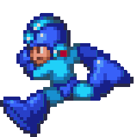
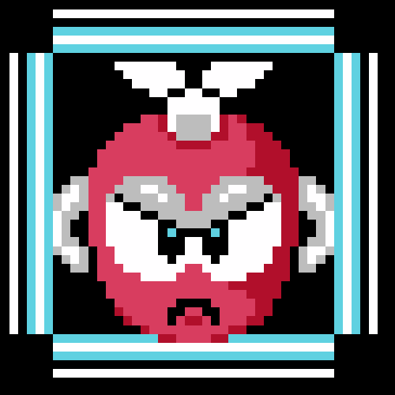
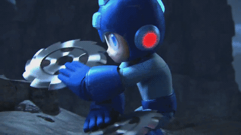
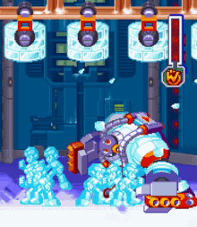

ESPAÇO — BLOCO TEXTO 01
Graduação
Minha formação acadêmica representa uma etapa importante na construção dos conhecimentos que quero desenvolver na área da tecnologia.
Atualmente, curso Ciência da Computação no Centro Universitário do Distrito Federal (UDF), onde tenho a oportunidade de aprofundar meus conhecimentos sobre computação, programação, lógica e desenvolvimento de sistemas.
A graduação também representa um espaço de descobertas. Cada disciplina apresenta novos conceitos, desafios e maneiras de compreender como a tecnologia funciona e como pode ser utilizada para solucionar problemas e construir novas possibilidades.
Mais do que acompanhar uma formação universitária, meu objetivo é aproveitar essa jornada para desenvolver uma base sólida de conhecimentos que possa aplicar em projetos próprios e em futuras experiências profissionais.

ESPAÇO — BLOCO TEXTO 02
Cursos Complementares
Cursos Complementares
Além da graduação, estou sempre buscando expandir meus conhecimentos
por meio de cursos online. Tenho acesso a uma biblioteca com mais de
200 cursos na área de Tecnologia da Informação, explorando diferentes
assuntos, ferramentas e possibilidades dentro da computação.
Também possuo formação em Montagem e Manutenção de Computadores,
área que despertou ainda mais meu interesse pelo funcionamento dos
componentes e dispositivos de hardware. Gosto de explorar cada peça,
entender suas capacidades e encontrar maneiras criativas de atribuir
novas funções à tecnologia.
Um exemplo disso foi o Anbernic RG476H, que transformei em uma
espécie de Nintendo 3DS de duas telas, explorando suas possibilidades
para criar uma experiência diferente. Para mim, aprender tecnologia
também significa experimentar, adaptar e descobrir até onde um
dispositivo pode chegar.

ESPAÇO — BLOCO TEXTO 03
Certificações e Trajetória Acadêmica
Minha jornada na tecnologia começou também pelo contato direto com
o hardware. Possuo certificações na área de Montagem e Manutenção
de Computadores, formação que me proporcionou conhecimentos sobre
componentes, funcionamento, montagem e manutenção de equipamentos.
Essa experiência contribuiu para desenvolver minha curiosidade
sobre como a tecnologia funciona e como podemos explorar suas
possibilidades.
Atualmente, curso Ciência da Computação no Centro Universitário do
Distrito Federal (UDF). Já concluí meu primeiro semestre e estou
avançando pelo segundo, ampliando meus conhecimentos em computação,
lógica, programação e fundamentos do desenvolvimento de software.
Cada etapa representa uma conquista importante nessa trajetória.
Da experiência prática com hardware à formação acadêmica em
computação, meu objetivo é continuar construindo uma base sólida
de conhecimentos e transformar o que aprendo em projetos,
experiências e novas possibilidades.

ESPAÇO — BLOCO TEXTO 04
Aprendizado Contínuo
A tecnologia está sempre evoluindo, e acompanhar esse movimento exige curiosidade, dedicação e disposição para aprender constantemente.
Além das atividades acadêmicas e dos cursos complementares, tenho interesse em explorar diferentes ferramentas, linguagens, plataformas e conteúdos relacionados à computação e ao desenvolvimento de jogos.
Parte desse aprendizado acontece por meio da prática: experimentar códigos, resolver problemas, testar ferramentas, estudar projetos e buscar compreender como diferentes tecnologias funcionam.
Quero continuar construindo minha própria biblioteca de conhecimentos, revisitando conceitos, descobrindo novas áreas e transformando cada aprendizado em uma oportunidade de evolução.